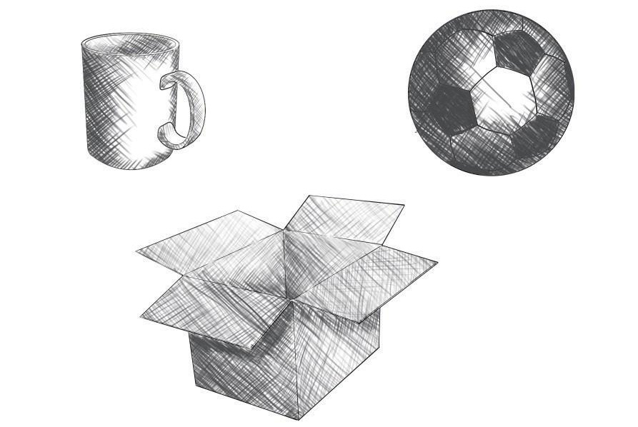
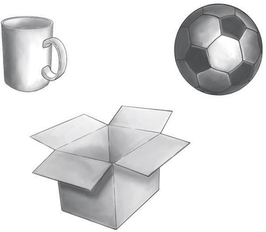

Cross-hatching: This is a shading technique by drawing lines across each other. When lines are drawn closer together, they form darker values. Similarly, when lines are drawn leaving space, they make a lighter value. Figure 2.23 shows cross-hatching shading technique.

Smudging: This is a technique of shading made by smearing light or dark values on a drawing with a pencil or charcoal. The smudging technique is also known as blending. Figure 2.24 shows smudging shading technique.
